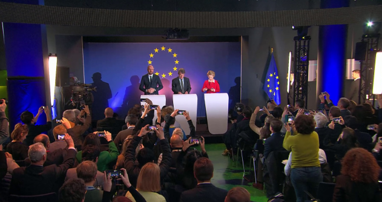
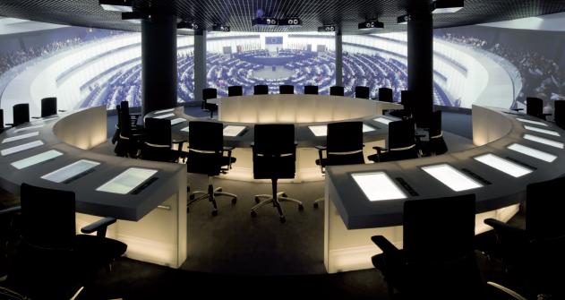
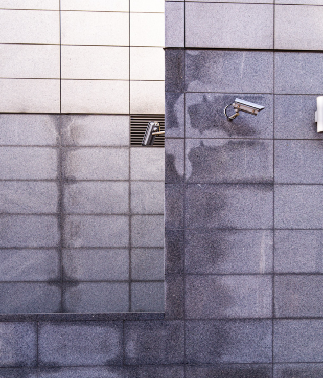

Galerie Architektury Brno představuje jako svou
první výstavu v cyklu Zoom In práci německého
architekta a výzkumníka Maximiliana Steverdinga
s názvem Eurotopia: Evropský stoh reprezentací.
Tento výzkumný projekt nastiňuje historii
reprezentativní architektury Evropského
parlamentu a spekuluje o její budoucnosti pod
vlivem měnících se požadavků občanů na
demokracii / s ohledem na měnící se požadavky
občanů na demokracii.
Výstava sestává z tří hlavních částí.První část
představuje klíčová témata, kterými se Eurotopia
zabývá, včetně bohatých doprovodných
ilustrací.Druhá část na práci volně navazuje a
umožňuje návštěvníkům se na moment virtuálně
přenést do imaginativní evropské instituce.
Návštěvníci si mohou pomocí svých chytrých
telefonů vyvolat iluzi, jako by byli v záři
reflektorů na tiskové konferenci někde v
Bruselu. Interaktivní instalace jim umožňuje
vybírat ze série experimentálních pozadí, která
mohou umístit místo běžně používané modré barvy.
Následně mohou koláž digitálně „zvěčnit“ a
prohlédnout si ji ve společnosti dalších koláží,
které vytvořili ostatní návštěvníci.
Ve třetí části Maximilian Steverding rozebírá
svou práci podrobněji, a návštěvníci se tak
mohou intenzivněji seznámit s jejími výsledky.
Zvolili jsme formu komentované prezentace, kdy
autor popisuje hlavní motivace a výsledky svého
bádání.Maximiliana Steverdinga jsme rovněž
pozvali do Brna na přednášku a následující
workshop. V rámci přednášky bychom chtěli
představit i jeho činnost / aktivity mimo
projekt Eurotopia, workshopem bychom však na
téma Eurotopie rádi navázali.Maximilian
Steverding se v současnosti jako odborný
asistent na univerzitě v Bonnu zabývá
prostorovým rozvojem Evropy a jeho
architektonickými implikacemi. Zaměřuje se na
způsoby materializace reprezentace a hodnotí,
jaké architektonické důsledky může mít rostoucí
požadavek na sebeprezentaci v politickém
kontextu. Vystudoval architekturu a pracoval
jako architekt, než začal zkoumat
(architektonickou) budoucnost evropské
demokracie. Těžiště jeho výzkumu leží na
rozhraní mezi prostorem, architekturou a
politikou.


